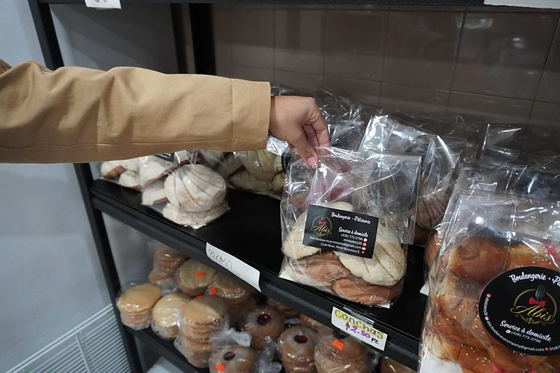
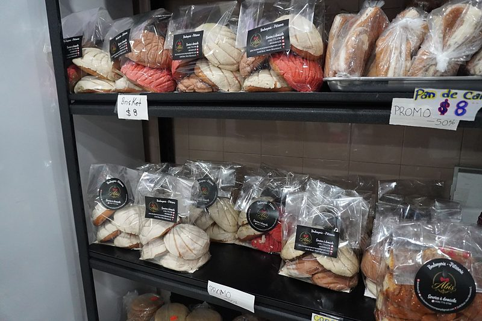

Recién horneado
Pan artesanal
Pan dulce y salado mexicano, hecho a mano todos los días con recetas de familia.

Día de Muertos
¡Ya llegó el pan de muerto!
Horneado en casa, suave y aromático, con ajonjolí o glaseado. Disponible solo por temporada: ven por el tuyo o llámanos para apartarlo.
Apartar mi panPan dulce
- ConchasDe vainilla y chocolate
- CuernitosSuaves y mantequillosos
- OrejasHojaldre crujiente con azúcar
- PolvoronesSe deshacen en la boca
- MarranitosDe piloncillo y canela
- DonasCon azúcar y canela
Pan salado
- BolillosIdeales para tortas
- TelerasPara tus tortas favoritas
De temporada
- Pan de muertoOctubre y noviembre
- Rosca de ReyesEnero — ¡encárgala!
Recién salido del horno




La disponibilidad cambia cada día. Llámanos para apartar tu pan o hacer un pedido grande.